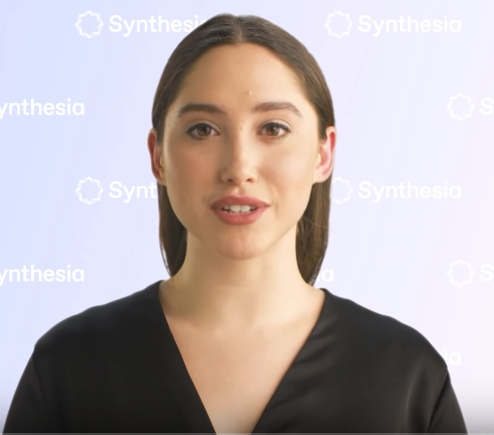

Humanos Artificiales
 Una tendencia de la que todos somos mayor o en menor medida conscientes, pero de la que se carece de una vision completa de hasta que punto estoy aqui y el gran impacto que puede acabar teniendo.
Es un fututro donde los avances en algoritmos de inteligencia artificial encargados de percibir y generar contenido realisto habran alcanzado tal grado de madurez que seremos capaces de crear en cuestion
de minutos poder generar un avatar realista y funcional capaz de cumplir muchas de las tareas en las que hoy contamos con humanos
Un futuruo donde necesariamente dudaremos de la persona que nos mira atraves de la pantalla y un futuro donde mas lo piensas mas incognitas genera.
Existe una solucion basada en IA que es capaz de generar un video con una presentadora locutando aquello que tu mismo le hayas suministrado como texto de entrada, es decir en cuestion de minutos poder generar un producto audiovisual equivalente al de un estudio de television.
De partida esto es impresionante lo que se ha conseguido es convertir en producto comercial una tecnologia que en los ultimos años hemos visto evolucionar.
Un ejemplo que se esta haciendo de algoritmos para analizar la cara de un presentador a partir de varios videos leyendo textos para luego transferir y generar el movimiento de labios deseados de acuerdo al texto suministrado, la correcta generarcion de su rostro quedara de a mano de la inteligencia artificial.
Algo similar al trabajo Wav2Lip que ha sido publicado recientemente y que si bien no logra resultados tan realistas como en el caso anterior, si consigue hacer esto mismo pero tomando como input la onda de audio que queremos transferir sin necesidad siquiera de convertirlo a texto
¿Qué nos puede aportar una tecnologia como esta?
Una herramienta como esta no solo te da una forma de creacion de contenido automatica donde solo te tendrias que ocupar de doblar el audio o escribir el guion, sino tambien podria tener un uso muy potente a la hora de generar versiones de una misma persona podiendo hablar cualquier idioma como si un hablante nativo se tratara.
Pero esto solo es el comienzo porque en muy poco tiempo veremos como estas herramientas evolucionan hasta poder generar este mismo resultado pero en tiempo real, algo que nos podria permitir por ejemplo tener videoconferencias con cualquier persona del mundo de la manera mas natural posible
dos conversaciones en paralelo cada uno hablando su idioma
Avatar Artificial
El concepto de avatar articial no es nuevo, es decir la posibilidad de crear un persosnaje completamente virtual con el que el resto de la gente pueda interactuar de manera natural es una idea con la que muchos hemos soñado que hasta hoy pocos han conseguido. Quizas el ejemplo mas sonado es el de Hatsune Miku, nna estrella del pop japones que ha evolucionado de ser una simple herramienta de voz a ser un idolo de masas capas de llenar conciertos conciertos donde todo undo busca verla bailar o cantar, el factor limitante de este futuro es evidentemente la tecnologia, es decir tras avatares tan sorpredentes tambien existen las tecnicas de captura de moviemiento, sintetizadores de voz, pantallas holograficas, equipos de diseñador grafico entre otras, que buscan darle el aspecto mas natural al avatar